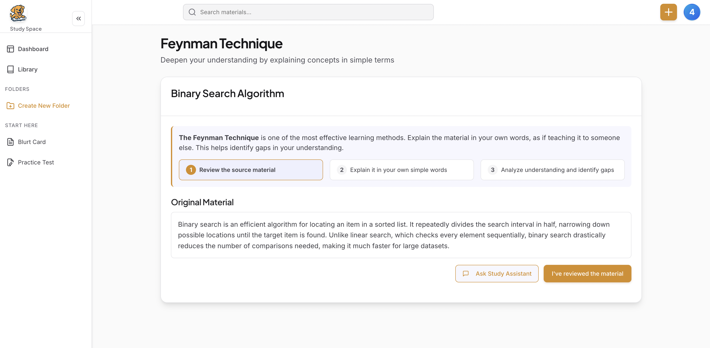
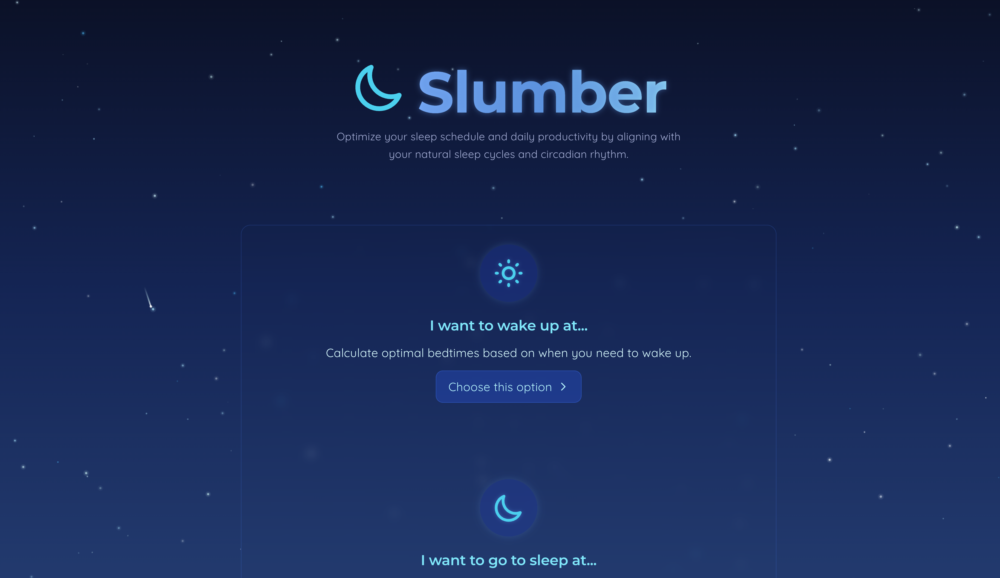

Portfolio
A showcase of my projects
Pyra
A security-focused AI voice agent that provides runtime security for user-confirmed crypto transactions. Built at Carnegie Mellon University's NexHacks 2026, the largest hackathon on the East Coast, where it won 2nd place in the DevTools Track. Uses natural language voice commands and a multi-gate security system to protect agents from vulnerable smart contracts and malicious transactions before they execute.
- Multi-Gate Security System - 5 verification layers including ENS resolution, address validation, contract detection, source code verification, and AI-powered vulnerability scanning before transaction execution
- Voice-Controlled Transactions - Natural language command processing using LiveKit voice agent with GPT-4o-mini, supporting ENS names and complex transaction intents through conversational interface
- Real-Time Vulnerability Detection - Powered by Kairo AI security API with BLOCK/WARN/ALLOW decision system, detecting re-entrancy, unchecked delegatecall, dangerous self-destruct patterns, and other critical vulnerabilities
- ENS Name Resolution - Automatic ".eth" domain resolution and validation, converting spoken input like "vitalik dot eth" to proper ENS format with fallback to raw addresses
TypeScript
LiveKit Agents
React
OpenAI GPT-4o-mini
Kairo AI Security
Ethers.js
Vite
Node.js

AgentGuard
An AI-powered security testing platform that analyzes AI agent system prompts for vulnerabilities using Google's Gemini API. It detects security issues, simulates attacks, and can automatically generate hardened prompts based on Microsoft's Agentic Zero Trust framework.
- Vulnerability Detection - Uses Gemini 2.0 Flash Exp to analyze prompts for 6+ vulnerability categories: prompt injection, jailbreak, data leakage, context smuggling, confused deputy attacks, and alignment failures
- Attack Simulation - Generates concrete attack payloads and expected outcomes for each vulnerability, along with specific mitigation strategies
- Security Scoring (1-100) - Provides color-coded risk assessment with interpretation (Critical: 0-40, High: 41-60, Medium: 61-80, Low: 81-100)
- Auto-Remediation - Uses Gemini 2.5 Pro to generate hardened prompts that fix vulnerabilities while preserving original functionality, with side-by-side comparison view
React 19
Node.js
Express 5
TypeScript
PostgreSQL
Prisma ORM
Redis
Google Gemini 2.0
Google Gemini 2.5 Pro
TailwindCSS 4

KnightMobile
An AI-powered autonomous navigation system that enables an ELEGOO Smart Robot Car to find objects in unknown environments using computer vision, LiDAR mapping, and intelligent path planning. The robot operates using a "Human-out-of-the-Loop" (HOOTL) approach where users give it a mission (e.g., "Find the red coffee mug") and it navigates completely autonomously without continuous human intervention, using real-time sensor fusion and AI decision-making to perceive, reason, plan, and act.
- Real-Time Object Detection with YOLO11n AI - Identifies 80+ object classes with confidence scoring, enriched with depth information from LiDAR fusion
- 3D Environment Mapping via Sensor Fusion - Combines iPhone LiDAR point clouds with ESP32 camera streams to create aligned depth maps and occupancy grids
- AI-Powered Autonomous Decision Making - Google Gemini 2.0 Flash ADK agent makes high-level navigation decisions with stateful reasoning and tool access
- Dynamic Path Planning with D* Lite Algorithm - Incremental pathfinding that efficiently replans when obstacles are discovered, with 8-connectivity for smooth, optimal paths
FastAPI
Google Gemini 2.0
YOLO11n
OpenCV
D* Lite
React
WebSockets
Arduino
ESP32
LiDAR

CardFinder
A personalized credit card recommendation platform designed to help users discover the most suitable credit cards based on their financial profile, spending habits, and personal preferences. The system leverages a sophisticated weighted decision matrix algorithm to provide personalized recommendations rather than generic suggestions, analyzing individual user profiles through an 11-question interactive quiz and calculating scores across five key criteria: Net Annual Value (NAV), approval odds, APR benefits, perks value, and ease of use.
- Intelligent Decision Matrix Algorithm - Dynamic weighted scoring system that analyzes 5 key criteria (NAV, approval odds, APR, perks, ease of use) with personalized weight adjustments based on user responses
- Interactive 11-Question Quiz - Streamlined assessment capturing credit profile, spending patterns, fee tolerance, travel habits, and optimization preferences to build comprehensive user profiles
- AI-Powered Chatbot - Google Gemini integration providing contextual explanations of recommendations, card comparisons, and answers to user questions about the decision logic
- Comprehensive Card Database - 700+ lines of detailed credit card data with rewards structures, welcome bonuses, perks valuations, and ease-of-use metrics for accurate matching
Next.js
React 19
TypeScript
Tailwind CSS
Node.js
Express.js
Google Gemini AI
Radix UI
React Hook Form
Zod

DocuLens
An AI-powered tax document analyzer that transforms tax confusion into clarity through intelligent document analysis. Scans uploaded tax documents (PDFs, photos, or scanned images), detects potential red flags like missing data or inconsistencies, and visually explains issues in a simple, interactive format. Helps users understand their W2, 1099, or 1040 forms without needing expensive CPA services.
- Smart Document Analysis with Google Gemini AI to understand and interpret complex tax documents
- Automated Issue Detection that identifies missing fields, inconsistencies, and formatting errors with risk assessment
- Plain English Explanations that convert complex tax jargon into simple, understandable language
- Visual Feedback System that highlights problem areas directly on documents with interactive overlays and tooltips
React 18
TypeScript
Vite
Node.js
Express.js
Firebase
Google Gemini 2.5
Tesseract.js
Bull.js
Redis

Retriv.ai
An AI-powered cognitive learning platform that leverages active recall, spaced repetition, and neuroscience principles to optimize study efficiency. Uses speech recognition and AI feedback to help users learn faster with less time investment.
- Implements the Feynman technique to promote deeper understanding of complex topics
- WebSpeech API integration for hands-free studying and verbal practice
- Adaptive spaced repetition algorithm based on Ebbinghaus forgetting curve
- Personalized study analytics that identify knowledge gaps and optimize review timing
Vue.js 3
Vuex
Firebase
DeepSeek AI
WebSpeech API
Vue Router

LyricLingo
A full-stack language learning application that helps users master new languages through music. Connects to Spotify, fetches currently playing songs, and generates translation flashcards with sentiment analysis to enhance the learning experience.
- Sophisticated Redis caching system that reduced API costs by 40%
- Custom lyric deduplication algorithm for efficient translation of repetitive content
- Seamless integration with Spotify, Genius Lyrics, and DeepL Translation APIs
- Natural Language Processing (NLP) for lyric sentiment analysis with 82% accuracy
React
Node.js
Express
MongoDB
Redis
JWT Auth
Framer Motion

Slumber
A sleep optimization platform that helps users optimize sleep schedules by aligning with natural sleep cycles and circadian rhythms. Provides personalized recommendations based on chronotype analysis and sleep science research to improve sleep quality and daytime productivity.
- Evidence-based calculator for optimal bedtimes and wake-up times based on 90-minute sleep cycles
- Chronotype analysis for personalized recommendations (early bird, intermediate, night owl)
- Daily productivity guidance with peak performance periods and energy slump predictions
- Fluid animations and responsive design with elegant dark mode experience
Next.js 14
TypeScript
Tailwind CSS
React Hooks
App Router
LocalStorage
